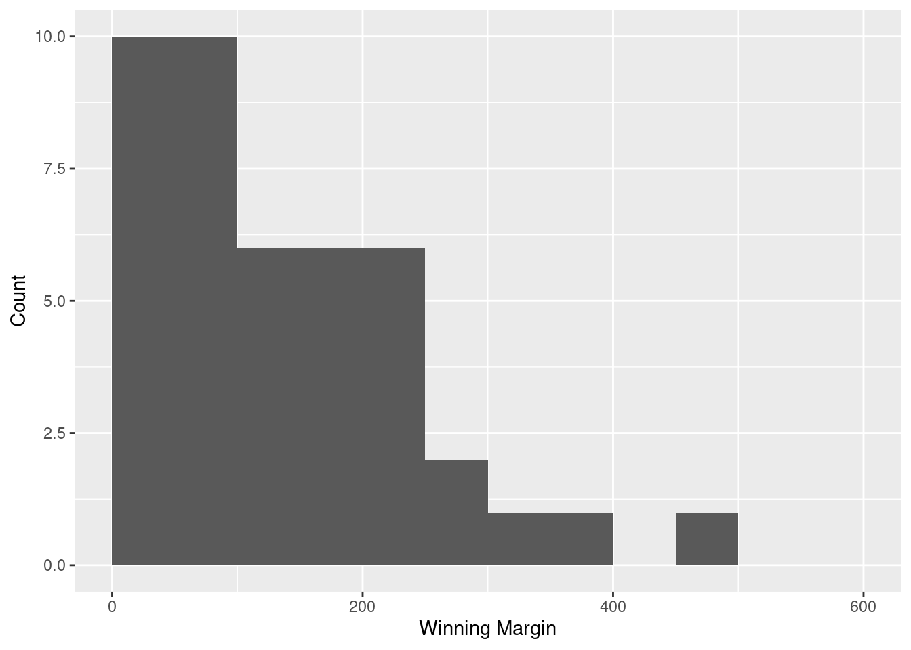

library(tibble)
library(lsrbook)10 Descriptive statistics
Important
You are, I’m sorry to inform you, reading the work-in-progress revision of “Learning Statistics with R”. This chapter is currently a mess, and I don’t recommend reading it.
Any time that you get a new data set to look at, one of the first tasks that you have to do is find ways of summarising the data in a compact, easily understood fashion. This is what descriptive statistics (as opposed to inferential statistics) is all about. In fact, to many people the term “statistics” is synonymous with descriptive statistics. It is this topic that we’ll consider in this chapter, but before going into any details, let’s take a moment to get a sense of why we need descriptive statistics. To get started, let’s take a look at the southern_slam data that is bundled as part of the lsrbook package. First, let’s load the packages that we’ll need:
The reason for loading the lsrbook package is probably obvious: that’s the package that provides the data set! The reason for loading tibble is probably less obvious, so I’d better explain: now that I’ve loaded the tibble package, the southern_slam data set will be interpreted as a tibble rather than a “vanilla” data frame. As a consequence, when I print the southern_slam data I get some slightly nicer looking output:
southern_slam# A tibble: 43 × 10
time home_team home_score visitor_team visitor_score margin
<dttm> <chr> <dbl> <chr> <dbl> <dbl>
1 2022-06-11 09:00:00 Coastal Ass… 258 Devil State… 62 196
2 2022-06-11 09:00:00 Tweed Valle… 248 Kingston Ci… 197 51
3 2022-06-11 09:00:00 North East … 160 Van Diemen … 137 23
4 2022-06-11 10:45:00 Canberra Ro… 104 South Sea R… 210 106
5 2022-06-11 10:45:00 Victorian R… 297 Brisbane Ci… 78 219
6 2022-06-11 12:30:00 Newcastle R… 94 WestSide Ro… 154 60
7 2022-06-11 12:30:00 Ballarat Ro… 83 Light City … 369 286
8 2022-06-11 14:15:00 Sun State R… 114 Western Aus… 224 110
9 2022-06-11 14:15:00 Victorian R… 89 Adelaide Ro… 232 143
10 2022-06-11 16:00:00 Coastal Ass… 224 Inner West … 65 159
# ℹ 33 more rows
# ℹ 4 more variables: track <dbl>, division <dbl>, pool <chr>, type <chr>So what is this data set anyway?
The southern_slam data set contains the results from 43 roller derby bouts that took place as part of the 2022 “Great Southern Slam” tournament held in Adelaide, Australia. I’ll talk more about this data set later, but for now it’s enough to note that we have columns specifying the names of the home_team and the visitor_team, columns storing the home_score and visitor_score, and another column called margin that contains the winning margin for each game.
Let’s have a look at the margins variable:
southern_slam$margin [1] 196 51 23 106 219 60 286 110 143 159 45 21 81 19 235 71 239 108 11
[20] 178 348 397 173 204 0 72 126 82 266 75 225 48 99 492 120 4 22 164
[39] 69 2 201 95 180This output doesn’t make it easy to get a sense of what the data are actually saying. Just “looking at the data” isn’t a terribly effective way of understanding data. In order to get some idea about what’s going on, we need to calculate some descriptive statistics (this chapter) and draw some nice pictures (Chapter @ref(graphics). Since the descriptive statistics are the easier of the two topics, I’ll start with those, but nevertheless I’ll show you a histogram of the southern_slam$margin data, since it should help you get a sense of what the data we’re trying to describe actually look like. We’ll talk a lot more about how to draw histograms in Section @ref(hist). For now, it’s enough to look at the histogram and note that it provides a fairly interpretable representation of the margins data.

10.1 Measures of central tendency
Drawing pictures of the data is an excellent way to convey the “gist” of what the data is trying to tell you. Another approach that can be helpful is to condense the data into a few simple “summary” statistics. In most situations, the first thing that you’ll want to calculate is a measure of central tendency. That is, you’d like to know something about the “average” or “middle” of your data lies. The two most commonly used measures are the mean, median and mode; occasionally people will also report a trimmed mean. I’ll explain each of these in turn, and then discuss when each of them is useful.
10.1.1 The mean
The mean of a set of observations is just a normal, old-fashioned average: add all of the values up, and then divide by the total number of values. The first five winning margins in the southern_slam data are 196, 51, 23, 106 and 219, so the mean of these observations is just: \[
\frac{196 + 51 + 23 + 106 + 219}{5} = \frac{595}{5} = 119
\] Of course, this definition of the mean isn’t news to anyone: averages (i.e., means) are used so often in everyday life that this is pretty familiar stuff. However, since the concept of a mean is something that everyone already understands, I’ll use this as an excuse to start introducing some of the mathematical notation that statisticians use to describe this calculation, and talk about how the calculations would be done in R.
The first piece of notation to introduce is \(N\), which we’ll use to refer to the number of observations that we’re averaging (in this case \(N = 5\)). Next, we need to attach a label to the observations themselves. It’s traditional to use \(X\) for this, and to use subscripts to indicate which observation we’re actually talking about. That is, we’ll use \(X_1\) to refer to the first observation, \(X_2\) to refer to the second observation, and so on, all the way up to \(X_N\) for the last one. Or, to say the same thing in a slightly more abstract way, we use \(X_i\) to refer to the \(i\)-th observation. Just to make sure we’re clear on the notation, the following table lists the 5 observations in the southern_slam$margins variable, along with the mathematical symbol used to refer to it, and the actual value that the observation corresponds to:
| The observation | Its symbol | The observed value |
|---|---|---|
| Winning margin, game 1 | \(X_1\) | 196 points |
| Winning margin, game 2 | \(X_2\) | 51 points |
| Winning margin, game 3 | \(X_3\) | 23 points |
| Winning margin, game 4 | \(X_4\) | 106 points |
| Winning margin, game 5 | \(X_5\) | 219 points |
Okay, now let’s try to write a formula for the mean. By tradition, we use \(\bar{X}\) as the notation for the mean. So the calculation for the mean could be expressed using the following formula: \[ \bar{X} = \frac{X_1 + X_2 + ... + X_{N-1} + X_N}{N} \] This formula is entirely correct, but it’s terribly long, so we use a summation symbol – written as \(sum\) – to shorten it.1 If I want to add up the first five observations, I could write out the sum the long way, \(X_1 + X_2 + X_3 + X_4 +X_5\) or I could use the summation symbol to shorten it to this: \[ \sum_{i=1}^5 X_i \] Taken literally, this could be read as “the sum, taken over all \(i\) values from 1 to 5, of the value \(X_i\)”. But basically, what it means is “add up the first five observations”. In any case, we can use this notation to write out the formula for the mean, which looks like this: \[ \bar{X} = \frac{1}{N} \sum_{i=1}^N X_i \]
In all honesty, I can’t imagine that all this mathematical notation helps clarify the concept of the mean at all. In fact, it’s really just a fancy way of writing out the same thing I said in words: add all the values up, and then divide by the total number of items. However, that’s not really the reason I went into all that detail. My goal was to try to make sure that everyone reading this book is clear on the notation that we’ll be using throughout the book: \(\bar{X}\) for the mean, \(\scriptstyle\sum\) for the idea of summation, \(X_i\) for the \(i\)th observation, and \(N\) for the total number of observations. We’re going to be re-using these symbols a fair bit, so it’s important that you understand them well enough to be able to “read” the equations, and to be able to see that it’s just saying “add up lots of things and then divide by another thing”.
10.1.2 Calculating the mean in R
Okay that’s the maths, how do we get the magic computing box to do the work for us? If you really wanted to, you could do this calculation directly in R. For the first southern_slam games, do this just by typing it in as if R were a calculator…
(196 + 51 + 23 + 106 + 219) / 5[1] 119… in which case R outputs the answer 595, just as if it were a calculator. However, that’s not the only way to do the calculations, and when the number of observations starts to become large, it’s easily the most tedious. Besides, in almost every real world scenario, you’ve already got the actual numbers stored in a variable of some kind, just like we have with the afl.margins variable. Under those circumstances, what you want is a function that will just add up all the values stored in a numeric vector. That’s what the sum() function does. If we want to add up all 43 winning margins in the data set, we can do so using the following command:2
sum(southern_slam$margin)[1] 5825If we only want the sum of the first five observations, then we can use square brackets to pull out only the first five elements of the vector. So the command would now be:
sum(southern_slam$margin[1:5])[1] 595To calculate the mean, we now tell R to divide the output of this summation by five, so the command that we need to type now becomes the following:
sum(southern_slam$margin[1:5]) / 5[1] 119Although it’s pretty easy to calculate the mean using the sum() function, we can do it in an even easier way, since R also provides us with the mean() function. To calculate the mean for all 176 games, we would use the following command:
mean(southern_slam$margin[1:5])[1] 119As you can see, this gives exactly the same answers as the previous calculations.
10.1.3 The median
The second measure of central tendency that people use a lot is the median, and it’s even easier to describe than the mean. The median of a set of observations is just the middle value. As before let’s imagine we were interested only in the first five winning margins: 196, 51, 23, 106, and 219. To figure out the median, we sort these numbers into ascending order:
\[ 23, 51, \mathbf{106}, 196, 219 \]
From inspection, it’s obvious that the median value of these five observations is 106, since that’s the middle one in the sorted list (I’ve put it in bold to make it even more obvious). Easy stuff. But what should we do if we were interested in the first six games rather than the first five? The sixth game in the tournament had a winning margin of 60 points, so our sorted list is now \[ 23, 51, \mathbf{60}, \mathbf{106}, 196, 219 \]
and there are two middle numbers, 60 and 106. The median is defined as the average of those two numbers, which in this case is 83. As before, it’s very tedious to do this by hand when you’ve got lots of numbers. To illustrate this, here’s what happens when you use R to sort all 43 winning margins. First, I’ll use the sort() function (discussed in Chapter @ref(datahandling)) to display the winning margins in increasing numerical order:
sort(southern_slam$margin) [1] 0 2 4 11 19 21 22 23 45 48 51 60 69 71 72 75 81 82 95
[20] 99 106 108 110 120 126 143 159 164 173 178 180 196 201 204 219 225 235 239
[39] 266 286 348 397 492As we have 43 observations in our data, the median value corresponds to item 22 in the sorted list of numbers. When we look up that observation in the list, we find that the median winning was 108. In real life, of course, we don’t actually calculate the median by sorting the data and then looking for the middle value by searching it manually. In real life, we use the median() command:
median(southern_slam$margin)[1] 108Much nicer.
10.1.4 Mean or median? What’s the difference?
Knowing how to calculate means and medians is only a part of the story. You also need to understand what each one is saying about the data, and what that implies for when you should use each one. The basic idea is illustrated in the figure below. The mean is basically the "centre of gravity" of the data set: if you imagine that the histogram of the data is a solid object, then the point on which you could balance it (as if on a see-saw) is the mean. In contrast, the median is the middle observation. Half of the observations are smaller, and half of the observations are larger.

What this implies, as far as which one you should use, depends a little on what type of data you’ve got and what you’re trying to achieve. As a rough guide:
- If your data are nominal scale, you probably shouldn’t be using either the mean or the median. Both the mean and the median rely on the idea that the numbers assigned to values are meaningful. If the numbering scheme is arbitrary, then it’s probably best to use the mode (Section @ref(mode)) instead.
- If your data are ordinal scale, you’re more likely to want to use the median than the mean. The median only makes use of the order information in your data (i.e., which numbers are bigger), but doesn’t depend on the precise numbers involved. That’s exactly the situation that applies when your data are ordinal scale. The mean, on the other hand, makes use of the precise numeric values assigned to the observations, so it’s not really appropriate for ordinal data.
- For interval and ratio scale data, either one is generally acceptable. Which one you pick depends a bit on what you’re trying to achieve. The mean has the advantage that it uses all the information in the data (which is useful when you don’t have a lot of data), but it’s very sensitive to extreme values, as we’ll see in Section @ref(trimmedmean).
Let’s expand on that last part a little. One consequence is that there’s systematic differences between the mean and the median when the histogram is asymmetric (skewed; see Section @ref(skewandkurtosis)). This is illustrated in Figure @ref(fig:meanmedian) notice that the median (right hand side) is located closer to the “body” of the histogram, whereas the mean (left hand side) gets dragged towards the “tail” (where the extreme values are).
To give a concrete example, suppose Bob (income $50,000), Kate (income $60,000) and Jane (income $65,000) are sitting at a table: the average income at the table is $58,333 and the median income is $60,000. Then Bill sits down with them (income $100,000,000). The average income has now jumped to $25,043,750 but the median rises only to $62,500. If you’re interested in looking at the overall income at the table, the mean might be the right answer; but if you’re interested in what counts as a typical income at the table, the median would be a better choice here.
10.1.5 Trimmed mean
One of the fundamental rules of applied statistics is that the data are messy. Real life is never simple, and so the data sets that you obtain are never as straightforward as the statistical theory says.3 This can have awkward consequences. To illustrate, consider this rather strange looking data set:
\[ -100, 2, 3, 4, 5, 6, 7, 8, 9, 10 \]
If you were to observe this in a real life data set, you’d probably suspect that something funny was going on with the \(-100\) value. It’s probably an outlier, a value that doesn’t really belong with the others. You might consider removing it from the data set entirely, and in this particular case I’d probably agree with that course of action. In real life, however, you don’t always get such cut-and-dried examples. For instance, you might get this instead:
\[ -15, 2, 3, 4, 5, 6, 7, 8, 9, 12 \]
The \(-15\) looks a bit suspicious, but not anywhere near as much as that \(-100\) did. In this case, it’s a little trickier. It might be a legitimate observation, it might not.
When faced with a situation where some of the most extreme-valued observations might not be quite trustworthy, the mean is not necessarily a good measure of central tendency. It is highly sensitive to one or two extreme values, and is thus not considered to be a robust measure. One remedy that we’ve seen is to use the median. A more general solution is to use a “trimmed mean”. To calculate a trimmed mean, what you do is “discard” the most extreme examples on both ends (i.e., the largest and the smallest), and then take the mean of everything else. The goal is to preserve the best characteristics of the mean and the median: just like a median, you aren’t highly influenced by extreme outliers, but like the mean, you “use” more than one of the observations. Generally, we describe a trimmed mean in terms of the percentage of observation on either side that are discarded. So, for instance, a 10% trimmed mean discards the largest 10% of the observations and the smallest 10% of the observations, and then takes the mean of the remaining 80% of the observations. Not surprisingly, the 0% trimmed mean is just the regular mean, and the 50% trimmed mean is the median. In that sense, trimmed means provide a whole family of central tendency measures that span the range from the mean to the median.
For our toy example above, we have 10 observations, and so a 10% trimmed mean is calculated by ignoring the largest value (i.e., 12) and the smallest value (i.e., -15) and taking the mean of the remaining values. First, let’s enter the data:
dataset <- c(-15, 2, 3, 4, 5, 6, 7, 8, 9, 12)Next, let’s calculate means and medians:
mean(dataset)[1] 4.1median(dataset)[1] 5.5That’s a fairly substantial difference, but I’m tempted to think that the mean is being influenced a bit too much by the extreme values at either end of the data set, especially the -15 one. So let’s just try trimming the mean a bit. If I take a 10% trimmed mean, we’ll drop the extreme values on either side, and take the mean of the rest:
mean(dataset, trim = .1)[1] 5.5which in this case gives exactly the same answer as the median. Note that, to get a 10% trimmed mean you write trim = .1, not trim = 10. In any case, let’s finish up by calculating the 5% trimmed mean for the southern_slam$margin data,
mean(southern_slam$margin, trim = .05) [1] 126.5128The choice to use \(\sum\) to denote summation isn’t entirely arbitrary. It’s essentially identical the Greek upper case letter sigma, which is the analogue of the letter S. I do realise that “S is for sum” is a bit silly, but life is like that I’m afraid. Mathematical fonts will usually have some subtle differences between the summation symbol \(\sum\) and the upper case sigma \(\displaystyle\Sigma\), but as you can see those differences are minor. Along similar lines, there’s a “product” symbol \(\prod\) used to denote the multiplication of lots of numbers, and it very closely resembles the upper case Greek letter pi (the Greek analog of P). Again, there are usually minor differences in how they look in a font: \(\prod\) is a product symbol, whereas \(\displaystyle\Pi\) is the upper case pi… and oh my god this footnote is boring.↩︎
Note that, just as we saw with the combine function
c()and the remove functionrm(), thesum()function has unnamed arguments. I’ll talk about unnamed arguments later in Section @ref(dotsargument), but for now let’s just ignore this detail.↩︎Or at least, the basic statistical theory – these days there is a whole subfield of statistics called robust statistics that tries to grapple with the messiness of real data and develop theory that can cope with it.↩︎